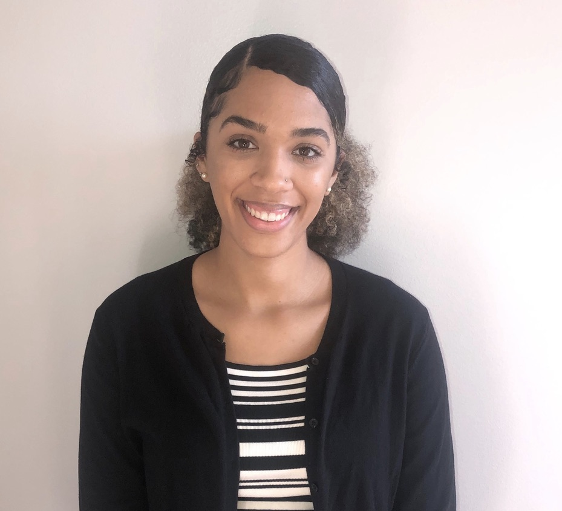

Kalyn Smith

Objective
Seeking employment as an entry level software developer in a company that will provide me with opportinuties for growth.
Education
University of Delaware, College of Health Sciences
Bachelor of Science, Exercise Science
University of Delaware, AA Program
Associate in Arts
Work Experience
Boys and Girls Club
Teen Counselor
- Educating adolescents about different programs such as, Botvin, Keystone and Prevention, to raise awareness while developing and improving life skills.
- Creating detailed lesson plans as a guide for class learning which is tailored to the needs of the students.
- Transport adolescents to and from the Boys and Girls Club to ensure all teens have a way to the Boys and Girls Club.
Kelly Services
Substitute
- Assisted the lead classroom teacher to maintain order in and outside of the classroom.
- Provided assistance to students with an array of disabilities which included communication issues, emotional disturbance, learning and developmental disabilities.
- Followed lesson plans provided by the teacher in order to maintain their classroom schedule, rules, and regulations.
Skills
LinkedIn Profile Address
www.linkedin.com/in/kalyn-smith-3aa414167